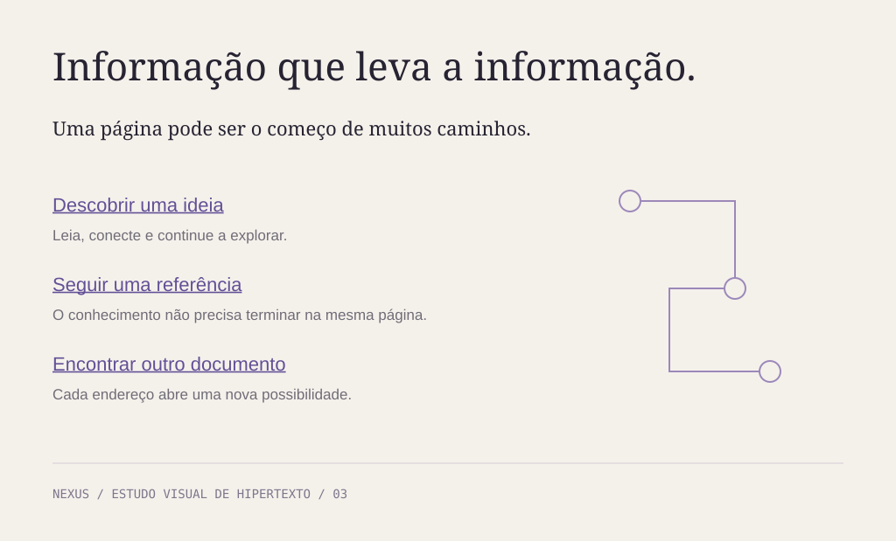

UM MUSEU DIGITAL SOBRE NÓS
Tudo começa
com uma
conexão.
Do primeiro transistor às máquinas que conversam.
Uma história de ideias que aproximaram mundos.
ANTES DE DESLIZAR A TELA
Houve um tempo em que
o futuro ocupava uma sala.
Hoje, uma mensagem atravessa continentes enquanto cabe na sua mão. Entre esses dois mundos, não houve um único salto: houve trabalho coletivo, escolhas de projeto e muitas formas novas de conectar pessoas e informação.
Esta é uma seleção de cinco mudanças.
Uma porta de entrada, não uma história completa da computação.
UMA REVOLUÇÃO EM MINIATURA
Menor por fora.
Maior por dentro.
Antes de conectar o mundo, foi preciso aprender a controlar um sinal.
Em dezembro de 1947, John Bardeen e Walter Brattain conseguiram amplificar um sinal com um dispositivo de germânio nos Bell Labs. A equipe, organizada por William Shockley, procurava alternativas às válvulas e aos interruptores eletromecânicos. O transistor foi anunciado publicamente em 1948. [1]
A mudança seguinte foi reunir componentes no mesmo circuito. Os trabalhos de Jack Kilby, em 1958, e Robert Noyce, em 1959, marcam etapas distintas dessa trajetória. Em 1971, o microprocessador comercial colocou funções de processamento em um chip. A miniaturização abriu espaço para computadores em novos lugares. [2]
Por que um interruptor importa tanto?
Em circuitos digitais, transistores podem atuar como chaves controladas eletricamente. Combinadas, essas chaves implementam operações lógicas. O exemplo ao lado representa apenas dois estados; não é uma simulação elétrica nem reproduz o transistor de 1947.
Transistor de contato pontual
Caminhos para o circuito integrado
Microprocessador comercial
DO COMANDO AO GESTO
E se a máquina
nos entendesse?
A pergunta deixou de ser apenas o que um computador calcula. Passou a ser como podemos pensar com ele.
Em 9 de dezembro de 1968, Douglas Engelbart e sua equipe apresentaram o NLS em uma demonstração pública de 90 minutos. O mouse chamou atenção, mas fazia parte de uma ideia maior: navegar por informação, editar documentos e colaborar com outra pessoa a distância. [3]
A apresentação reuniu hipertexto, ligações entre arquivos e colaboração com áudio e vídeo. Não foi o lançamento de um computador doméstico. Foi uma demonstração de pesquisa que tornou visível outra relação com a máquina: interativa, conectada e orientada ao trabalho intelectual. [3]
Uma interface muda a tarefa?
Compare as duas representações ao lado. Um comando exige conhecer uma instrução; uma interface visual oferece uma ação reconhecível. Ambas podem abrir o mesmo documento. A diferença está no que a pessoa precisa lembrar e descobrir. Esta é uma demonstração didática, não uma reprodução do NLS.
> abrir historia.txt_
Uma nova maneira
de pensar, juntos.
Uma nova maneira de pensar, juntos.
O CONHECIMENTO GANHA ENDEREÇO
Uma ideia.
O mundo inteiro.
O poder da web estava na possibilidade de seguir uma conexão.
Tim Berners-Lee propôs a World Wide Web em 1989, no CERN, para facilitar a troca de informações entre cientistas. O primeiro site explicava o próprio projeto e era hospedado em seu computador NeXT. Em 30 de abril de 1993, o CERN colocou o software da web em domínio público. [4]
A internet é a infraestrutura que conecta redes. A web é um sistema de documentos e recursos ligados por endereços e hiperlinks, acessado sobre essa infraestrutura. A distinção importa: uma mensagem pode viajar pela internet sem ser uma página web.
Visitar a primeira página preservada ↗
A INTERFACE VIRA UM TOQUE
O mundo,
na sua mão.
A tela deixou de ser um lugar até onde íamos. Passou a acompanhar nossos passos.
Em janeiro de 2007, a Apple apresentou o iPhone como a combinação de telefone, reprodutor de música e dispositivo de comunicação pela internet. A tela multitoque permitia controlar funções com os dedos; o navegador, os mapas e o e-mail faziam parte da proposta. [5]
Esse anúncio é um marco selecionado, não o início de toda a computação móvel. Ele ajuda a observar uma mudança de interface: parte dos controles físicos passa a ser desenhada por software. A mesma superfície pode mostrar um teclado, uma fotografia ou um mapa, conforme a tarefa.
O que isso muda para quem cria sites?
O dedo não tem a precisão de um cursor. Um botão precisa de espaço, a leitura deve caber em uma coluna e nenhuma informação essencial pode depender de hover. Neste site, o conteúdo vem primeiro; as composições se expandem quando a tela permite.
Uma tela.
Muitas possibilidades.
Explore o caminho.
Um mapa responde à sua localização e à sua intenção de chegar.
NOVAS CAPACIDADES, NOVAS PERGUNTAS
Agora, podemos
conversar.
A linguagem se torna uma interface. A responsabilidade continua sendo humana.
Em 2017, o artigo Attention Is All You Need apresentou o Transformer: uma arquitetura baseada em mecanismos de atenção, sem as recorrências e convoluções usadas pelos modelos comparados no trabalho. Os experimentos principais eram de tradução automática. [6]
A atenção permite relacionar partes de uma sequência ao construir suas representações. O diagrama é uma analogia visual dessa relação, não uma visualização dos pesos de um modelo. O artigo não demonstrava consciência nem inaugurava toda a pesquisa em inteligência artificial.
Também não basta uma resposta parecer convincente. O perfil de IA generativa do NIST propõe considerar riscos durante o desenvolvimento, o uso e a avaliação desses sistemas. Conferir evidências e adequar o uso à tarefa continuam sendo parte do trabalho. [7]
Se a interface muda,
o que precisamos aprender?
DA MATÉRIA À LINGUAGEM
A tecnologia muda.
A curiosidade conecta.
Cada interface carrega escolhas de quem a construiu.
Entender sua história é começar a escolher o que vem depois.
O QUE SUSTENTA ESTA HISTÓRIA
Explore as fontes.
Texto editorial original, baseado nas referências abaixo. Consulte os registros completos para aprofundar os temas. Pesquisa: novembro de 2026.
- 01Invention of the Point-Contact TransistorCOMPUTER HISTORY MUSEUM · HISTÓRIA DO TRANSISTOR↗
- 02The Silicon Engine — TimelineCOMPUTER HISTORY MUSEUM · CIRCUITOS E MICROPROCESSADORES↗
- 03The 1968 DemoDOUG ENGELBART INSTITUTE · REGISTRO DA DEMONSTRAÇÃO↗
- 04The birth of the WebCERN · ORIGEM E ABERTURA DA WEB↗
- 05Apple Reinvents the Phone with iPhoneAPPLE · ANÚNCIO DE 9 DE JANEIRO DE 2007 · FONTE COMERCIAL↗
- 06Attention Is All You NeedVASWANI ET AL. · ARTIGO CIENTÍFICO · 2017↗
- 07Generative Artificial Intelligence ProfileNIST · AI 600-1 · 2024↗